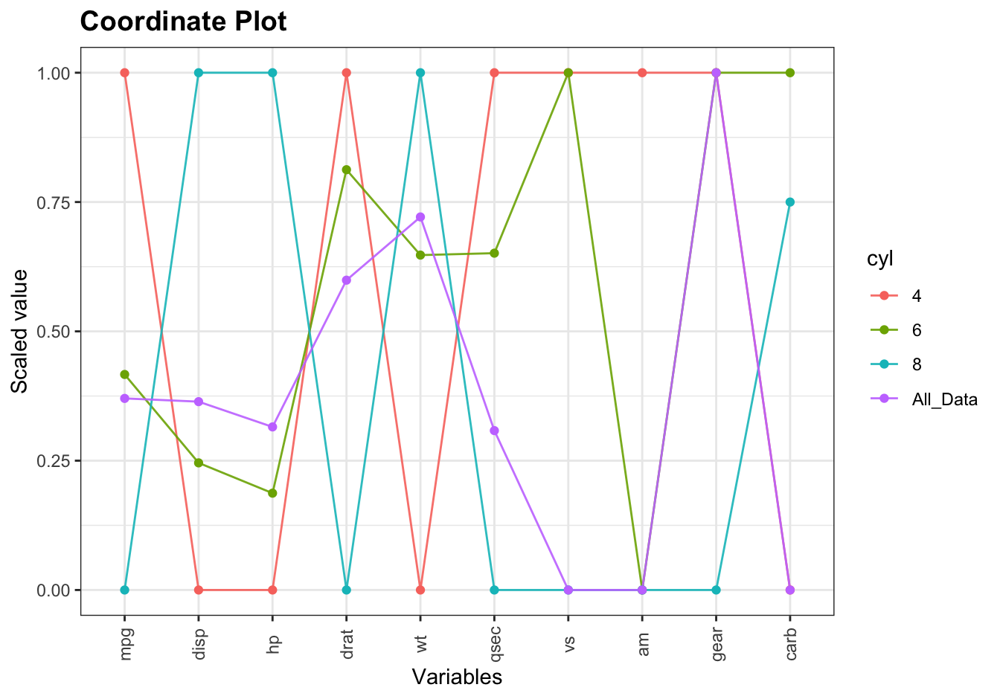

2 Coordinate plot
coord_plot(data=mtcars, group_var="cyl", group_func=median, print_table=TRUE)
cyl mpg disp hp drat wt qsec vs am gear carb
1 4 26.0 108.0 91.0 4.080 2.200 18.90 1 1 4 2.0
2 6 19.7 167.6 110.0 3.900 3.210 18.30 1 0 4 4.0
3 8 15.2 350.5 192.5 3.120 3.760 17.18 0 0 3 3.5
4 All_Data 19.2 196.3 123.0 3.695 3.325 17.71 0 0 4 2.0